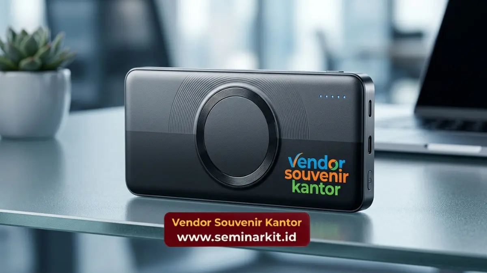

Vendor merchandise Jakarta adalah mitra pengadaan suvenir perusahaan kustom yang memproduksi barang promosi premium guna meningkatkan citra merek dan loyalitas klien bisnis Anda.
- Pengadaan barang promosi premium memperkuat identitas merek di mata klien dan karyawan.
- Proses produksi berfokus pada kontrol kualitas ketat untuk menghasilkan suvenir eksklusif.
- Investasi pada corporate gift memiliki dampak langsung terhadap retensi mitra bisnis.
- Layanan pengadaan B2B memfasilitasi kebutuhan kustomisasi skala besar secara efisien.
- Kemitraan dengan penyedia layanan profesional menjamin ketepatan waktu distribusi.
Penggunaan vendor merchandise Jakarta merupakan langkah krusial bagi entitas bisnis modern yang ingin memperkuat posisinya di pasar. Kebutuhan akan barang promosi tidak lagi sekadar soal membagikan barang gratis, melainkan strategi komunikasi pemasaran yang terukur. Bekerja sama dengan penyedia layanan profesional memastikan bahwa setiap produk yang mewakili nama perusahaan memiliki kualitas yang sejalan dengan nilai merek tersebut. Informasi terpenting yang harus dipahami oleh setiap manajer pemasaran adalah bahwa suvenir korporat berfungsi sebagai ekstensi fisik dari janji merek kepada konsumen dan mitra kerja. Selain retensi, akuisisi mitra baru juga sangat dipengaruhi oleh impresi pertama yang sering kali dibentuk melalui pemberian cinderamata korporat. Memilih untuk berinvestasi pada barang promosi berkualitas tinggi mengurangi risiko citra buruk yang ditimbulkan oleh produk murahan atau mudah rusak. Oleh karena itu, pengadaan merchandise harus dikelola dengan standar yang ketat, mengutamakan fungsionalitas, estetika, dan daya tahan.
Apa Peran Utama Penyedia Layanan Barang Promosi?
Penyedia layanan barang promosi bertugas merancang, memproduksi, dan mendistribusikan produk kustom bernilai tinggi yang dioptimalkan secara spesifik untuk merepresentasikan identitas visual sebuah perusahaan. Keberadaan layanan penyedia barang promosi profesional mengambil alih beban operasional dari tim internal perusahaan. Mengurus pengadaan suvenir secara mandiri memakan waktu dan sumber daya yang besar, mulai dari pencarian bahan baku, pengawasan produksi, hingga pengendalian mutu. Vendor merchandise Jakarta mengatasi masalah ini dengan menyediakan alur kerja yang sudah terintegrasi, mulai dari tahap konsultasi desain hingga pengiriman akhir. Penyedia layanan ini juga berfungsi sebagai konsultan strategis. Mereka memahami material apa yang paling cocok untuk mencetak logo tertentu, teknik aplikasi apa yang memberikan daya tahan terlama, dan produk apa yang paling diminati oleh demografi penerima tertentu. Nilai tambah ini sangat esensial bagi perusahaan yang ingin memaksimalkan anggaran pemasaran mereka tanpa harus melakukan uji coba yang berisiko. Dengan kapasitas produksi yang terukur, penyedia layanan dapat menangani pesanan dalam jumlah masif tanpa mengorbankan detail pada setiap unit produk.
Mengapa Investasi Pada Corporate Gift Sangat Penting?
Investasi pada corporate gift sangat penting karena strategi ini menciptakan ikatan emosional jangka panjang antara merek perusahaan dengan klien, mitra bisnis, serta karyawan internal.
Membangun loyalitas di era bisnis yang kompetitif membutuhkan lebih dari sekadar transaksi finansial. Memberikan apresiasi fisik melalui suvenir eksklusif membuktikan bahwa perusahaan menghargai hubungan profesional yang telah terjalin. Souvenir yang diletakkan di meja kerja klien berfungsi sebagai pengingat visual harian tentang keberadaan merek Anda, memastikan nama perusahaan tetap menjadi yang teratas dalam ingatan mereka saat kebutuhan bisnis muncul. Lebih jauh lagi, pemberian apresiasi kepada karyawan internal terbukti mampu meningkatkan moral dan produktivitas tim. Barang-barang seperti pakaian seragam premium atau perangkat kerja berkualitas menumbuhkan rasa bangga dan kepemilikan. Ketika karyawan merasa dihargai, tingkat pergantian staf menurun, yang secara langsung menghemat biaya operasional jangka panjang perusahaan. Pengadaan barang-barang ini harus dilakukan melalui saluran yang tepat agar standar kualitas tetap terjaga dan seragam.

Bagaimana Pengaruh Kustomisasi Terhadap Citra Merek?
Kustomisasi produk promosi secara langsung mengomunikasikan tingkat profesionalisme merek karena detail desain khusus menunjukkan dedikasi perusahaan dalam menyajikan pengalaman premium kepada audiens target. Setiap elemen kustomisasi, mulai dari pemilihan warna Pantone yang presisi hingga metode cetak timbul pada material kulit, berbicara banyak tentang standar perusahaan. Produk generik yang hanya ditempel logo tidak lagi cukup untuk memberikan kesan mendalam. Pasar saat ini menuntut personalisasi yang dipikirkan matang-matang, di mana barang promosi tersebut terasa eksklusif dan dibuat khusus untuk penerimanya. Vendor merchandise Jakarta memfasilitasi kebutuhan ini melalui teknologi manufaktur mutakhir.
Personalisasi tingkat tinggi juga mencegah barang promosi berakhir di tempat sampah. Produk yang dirancang dengan estetika modern dan material fungsional akan digunakan dalam kehidupan sehari-hari penerima, memperluas jangkauan eksposur merek ke lingkungan publik. Setiap kali produk tersebut digunakan, merek perusahaan mendapatkan promosi gratis yang diakui oleh lingkaran sosial penerima, menciptakan efek pemasaran dari mulut ke mulut yang sangat bernilai. Untuk memahami lebih jauh tentang dampak pemberian B2B, Anda dapat merujuk pada analisis Forbes mengenai strategi corporate gifting.
Apa Saja Dampak Kualitas Material Pada Persepsi Klien?
Kualitas material suvenir korporat secara langsung membentuk persepsi klien mengenai kredibilitas, kekuatan finansial, serta komitmen perusahaan Anda terhadap keunggulan dan standar operasional.
Menggunakan material premium seperti baja tahan karat berkualitas, katun organik, atau kulit asli mengirimkan pesan bahwa perusahaan Anda stabil, sukses, dan menolak kompromi dalam hal kualitas. Sebaliknya, material plastik tipis atau kain berkualitas rendah akan secara instan merusak kepercayaan klien, terlepas dari seberapa baik layanan utama perusahaan Anda. Oleh karena itu, pengawasan ketat terhadap rantai pasok material adalah keharusan mutlak. Proses seleksi material juga berkaitan erat dengan nilai-nilai keberlanjutan. Perusahaan modern semakin dinilai berdasarkan tanggung jawab lingkungan mereka. Menggunakan material daur ulang atau sumber daya terbarukan untuk barang promosi dapat secara signifikan meningkatkan reputasi perusahaan di mata klien yang peduli lingkungan. Konsultasi menyeluruh dengan penyedia layanan manufaktur membantu perusahaan menyelaraskan pilihan material dengan nilai-nilai inti merek mereka. Pengadaan barang promosi bukan sekadar beban biaya pemasaran, melainkan investasi strategis untuk mengakuisisi dan mempertahankan klien bernilai tinggi. Kualitas produksi yang ditangani oleh pihak profesional menjamin konsistensi citra merek di setiap titik interaksi fisik. Fokus pada fungsionalitas dan estetika material premium merupakan kunci keberhasilan program apresiasi korporat.
Untuk memastikan kebutuhan branding perusahaan Anda tereksekusi dengan sempurna melalui produk berkualitas tinggi, pastikan Anda merencanakan pengadaan bersama spesialis berpengalaman. Kunjungi vendorcorporategift.web.id sekarang untuk berdiskusi langsung mengenai proyek suvenir eksklusif Anda dan wujudkan strategi retensi klien yang lebih efektif.